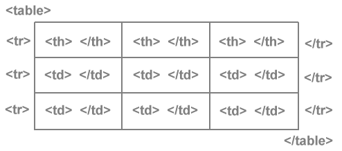

Tabelle

Le tabelle sono tra le componenti più importanti dell’HTML: nate agli inizi del Web per impaginare dati aggregati,
si sono poi trasformate in uno strumento indispensabile per gestire i layout grafici,
per tornare, nell’epoca dei CSS, ad essere elementi utilissimi per rappresentare informazioni.